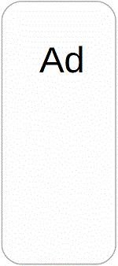

How to Spend 48 Hours in Beautiful Barcelona
Day 1
- Start the day off with a delicious cup of Spanish coffee and some scrumptious Spanish pastries. My favorite place for breakfast is El Mercato. Their croissants are so soft and flaky.
- After breakfast, walk over to La Rambla. La Rambla is a long street that is always bustling with locals and tourists. The street is lined with so many different stores that are fun to explore.
- La Boqueria is the next stop! It is located right off La Rambla. Here you can find the freshest fruit and meats. It is so lively. There are so many eateries here at La Boqueria. I could spend all day just walking around and sampling different foods.
- For dinner, head over to Barceloneta Beach. You will surely enjoy a delicious meal with an amazing view. Definitely share a big pan of paella with some Spanish red wine. In the table, I've listed some of my favorite restaurants and what I rate their food and service.
- To end your first day, go to the Magic Fountain! The grand fountain plays along to some tunes with dramatic lights.
| Food | Service | |
|---|---|---|
| Can Majo | Amazing | Amazing |
| Pez Vela | Good | Amazing |
| La Cova | Great | Bad |
| La Dune | Great | Great |
| Caupolican | Good | Amazing |
Day 2
- Wake up and head to Casa Batllo. This is a house constructed by the famous Antoni Gaudi. The interior is stunning and unlike any other house you will ever go to! Antoni Gaudi even lived here.
- Park Guell is a 15 minute walk from Casa Batllo and is also constructed by Gaudi. The park is so big and so fun to walk around. The landscape is gorgeous with so much greenery and beautiful plants.
- Next, go to the bunkers of carmel. (The Spaniards call it El Bunker Del Carmel). This is a local secret! Not many tourists know of this site. From here, you can see all of barcelona! The view is breathtaking. You can see the water as well as every single street and building.
- For dinner go to plaza mayor and eat at any of the little restaurants lining the town center! You will not be disappointed.
The view from the bunker
